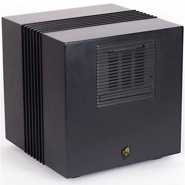
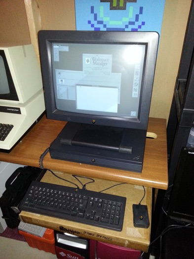
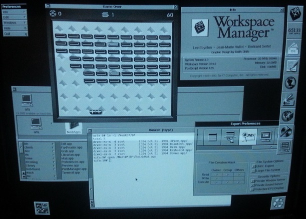
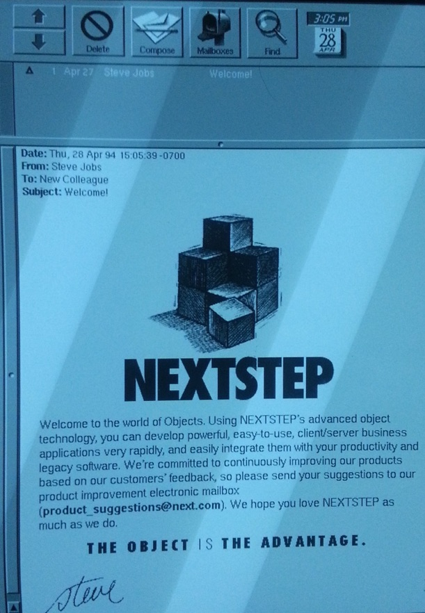
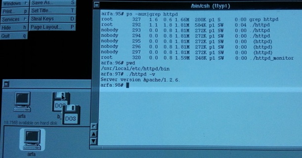
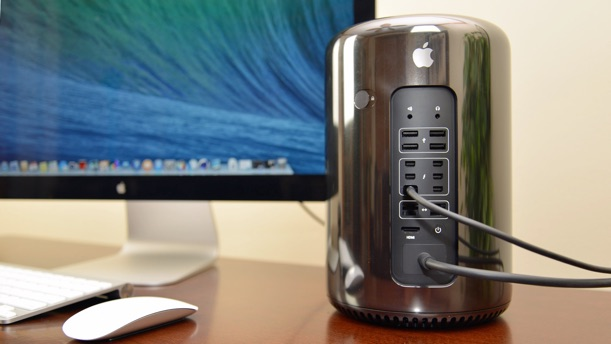
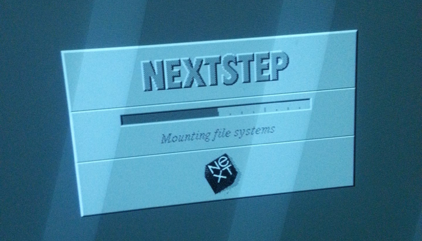

Now that is some NeXT level stuff...
Friday, July 29, 2016
I managed to get some NeXT workstations this week from a former colleague of mine who also collects vintage computers. For those who don't know what a NeXT workstation is, it's essentially the UNIX system that became Mac OS X, as well as the UNIX system that Tim Berners-Lee used to create the world's first Web server using his new protocol called HTTP (Hyper-Text Transfer Protocol).
1. What is NeXT? (pun intended)
NeXT was the computer company that Steve Jobs (co-founder of Apple) created after he got kicked out of Apple in the 1980s. They made high-end UNIX workstations that were intended to rival Apple computers, and primarily targeted for the higher education and science/engineering markets. However, they were not as successful as their competitors in this market and when Steve Jobs returned to Apple in 1997, he ensured that Apple purchased NeXT.
2. NeXT hardware (good, but not revolutionary)

The first NeXT workstation in 1988 was a magnesium metal cube (later called the NeXTCube) that had a 25MHz Motorola 68030 CPU, 8MB of RAM (expandable to 16MB) and optical CD storage that was very unreliable, but this was quickly replaced with a 25MHz or 33MHz Motorola 68040 CPU, 16MB of RAM (expandable to 64MB), and hard disk storage. You can see pictures of the NeXT cube that Tim Berners-Lee used to host the first Web server at https://cds.cern.ch/record/1547556?ln=en, which hosted a 25MHz 68040 CPU and what looks like 16MB of RAM (the base specs of a NeXT cube). The hardware was pretty good, but not revolutionary - high-end UNIX workstations at the time were boasting RISC CPUs and more hardware specs (but at a much greater cost).
That being said, the performance of NeXT computers was far more than what you’d expect given the amount of RAM and the non-RISC Motorola CPU. This is due to the fact that NeXT also included a Motorola 56001 Digital Sound Processor (DSP) on the motherboard to handle all sound, image, speech and encryption, as well as used a mainframe hardware design that consisted of over a dozen custom hardware controllers for all input/output. These custom hardware controllers were stored on two LSI chips and only allowed hardware components to access to the CPU and RAM when absolutely needed, and only for the time that they needed it (a “first” at the time). In short, a NeXT workstation performed far better than most people would expect - the performance was close to most of the high-end UNIX workstations at the time, but for a fraction of the cost.
NeXT hardware was also very proprietary - the mouse and keyboard connected to the greyscale monitor (no color, WTF?!?), which in turn connected to the computer with a big thick cable. This cable even supplied power to the monitor because the monitor had no separate power cable - you plugged it all in and turned it on with the power button on the keyboard.
And at $10,000, the 25MHz 68040 NeXT cube was seen as expensive by most critics in the industry, even though it was faster and price competitive with high-end Macintosh computers that had similar specifications. As a result, NeXT released the same hardware within a desktop case called the NeXTStation. The NeXTStation had the same 25MHz or 33MHz 68040 CPU (and performance), but shipped with only 8MB of RAM. The RAM could be expanded to 32MB, or 128MB in the 33MHz version (twice the RAM capacity of the NeXTCube).

The only other difference was that the NeXTStation didn’t have room for a expansion cards or a CD drive (you had to add an external one), but these changes combined were enough to allow NeXT to sell the base model of the NeXTStation for $5,000, which was quite a good deal at the time.
I picked up three NeXTStations: two 25MHz 68040 models (one with 8MB RAM and one that I bumped up to 16MB), as well as a 33MHz 68040 with 32MB RAM (shown in the picture to the right).
It’s also important to note that NeXTStations and NeXTCubes were mostly greyscale - later versions could do color, but you had to pay another $3,000!
If you manage to pick up a NeXT machine, there are a few things you should keep in mind.
Firstly, if the battery on the motherboard has been removed, or is dead, you’ll need to replace it as well as modify the boot parameters afterwards since NeXT computers are set to boot from the LAN by default. To do this, you’ll need to:
-
1.Enter the ROM Monitor by holding down both Command keys as well as the tilde (~) key on the keyboard once you turn on the NeXT computer
-
2.At the ROM Monitor prompt, type p, and enter sd (SCSI disk) when prompted for the boot device (all other options should remain the default)
-
3.Hit the Power button on the keyboard and choose y when prompted to shut down the computer - you can now boot up normally
Secondly, you’ll need to reset the password for the root and me (same as root) users in Single User Mode (since you probably don’t know the password to them unless the previous owner told you). To boot into Single User Mode and change these passwords:
-
1.Enter the ROM Monitor by holding down both Command keys as well as the tilde (~) key on the keyboard once you turn on the NeXT computer
-
2.At the ROM Monitor prompt, type bsd()-s (which boots the mach kernel on the first scsi disk in single user mode) - you can instead type the full command if this doesn’t work (b sd(0,0,0)sdmach -s)
-
3.The system will boot to a root user shell prompt (#) - at this prompt type sh /etc/rc
-
4.The system will now start multi-user mode - when this has completed, type nu -m to start the NeXT User utility and change the passwords to the root and me user (at minimum) and quit the utility when finished
-
5.Finally type reboot to reboot your system and sync the change (do NOT hit the Power button on the keyboard!)
3. NeXT software (the real reason you bought NeXT)
The operating system used on NeXT computers was called NeXTSTEP. More importantly NeXTSTEP was the easiest-to-use UNIX operating system of the 1990s by far, and remained so until Macintosh OS X. In retrospect, it makes perfect sense that it eventually became OS X.
3.1 Working with the NeXTSTEP desktop
Firstly, the desktop had a lot of features that other UNIX systems of the time (which largely ran a basic desktop called CDE) simply did not have. It used display Postscript (an on-screen display engine that used modern typography), and there was a simple dock on the right which had shortcuts to common applications that you could customize (the same as the dock in OS X), as well as a shortcut to the Preferences app (the same as System Preferences in OS X). Each app you open also opened a context-sensitive menu in the upper left corner (just like the top bar in OS X) that allowed you to configure or quit the application. The main file browser was called the Workspace Manager, and the default UNIX shell was csh (since NeXTSTEP is based on BSD UNIX, but with a mach kernel).

To set up networking or host network services such as file sharing and email, you could run a very simple wizard (this task was daunting at best on most UNIX machines of the time). Similarly, the desktop hid anything that wasn’t normally required, including system directories used by UNIX, unless you told it you were a UNIX expert in the Preferences app!
I should also note here, that the NeXTSTEP desktop ran reasonably well on 8MB of RAM, but ran very fast with 16MB of RAM - this is why most NeXTStations were upgraded to 16MB or more.
3.2 Application bundles
Remember how NeXTSTEP became Mac OS X once Steve Jobs returned to Apple and brought NeXT with him? We’ve already seen some similarities in the desktop between NeXTSTEP and Mac OS X (display Postscript, the dock, Preferences app, and context-sensitive menus for apps), but the similarities are a bit more pronounced when we look at applications in NeXTSTEP. Just like in Mac OS X, every NeXT application is actually an application bundle (a directory that ends in .app that contains the application itself and any necessary resources). These applications were made using a powerful object-oriented language called Objective-C, alongside many frameworks (or kits) that NeXT made freely available to computer programmers at the time. When you opened your email for the first time on your NeXT workstation, there was an email from Steve Jobs waiting for you that touted NeXT’s advanced object-oriented development capabilities:

While NeXTSTEP was a great OS, the developer tools were amazing, and the REAL reason why people used NeXTSTEP. Amid lackluster sales of their computers, NeXT stayed alive because they sold NeXTSTEP for other platforms including Intel x86, SPARC and PA-RISC. I remember the University of Waterloo buying a lot of HP PA-RISC 712 workstations just to run NeXTSTEP and the development tools because it was cheaper doing that than buying NeXT hardware!
Objective-C hasn’t gone away either - in fact, most Mac OS X and iOS apps are made using it, and when you develop those apps, you still inherit the basic functionality from the built-in parent object, NSObject (which stands for NeXT Software Object) - so if you’re a Mac or iOS developer, you’re still using the development system started by NeXT!
3.3 The NeXTSTEP UNIX system
If you take a look at the underpinnings of the UNIX system in NeXTSTEP, you’ll realize that they are *almost* identical to Mac OS X today!
Firstly, let’s take a look at the directory structure on my NeXTSTEP 3.3 system. If you run the ls -l / command to view the contents of the root directory, you’ll notice many of the same folders on a modern Mac OS X system:
total 1693
drwxr-xr-x 4 root 1024 Apr 3 18:49 .NeXT/
-rw-r--r-- 1 root 460 Oct 21 1994 .cshrc
-rw-r--r-- 1 root 130 Jul 31 1992 .hidden
-rw-r--r-- 1 root 187 Mar 20 1989 .login
-rw-r--r-- 1 root 52 Aug 1 1994 .logout
-rw-r--r-- 1 root 150 Dec 8 1992 .path
-rw-r--r-- 1 root 125 Dec 8 1992 .profile
drwxr-xr-x 3 root 1024 Dec 5 13:32 Library/
drwxr-xr-x 12 root 1024 Nov 11 1994 NextAdmin/
drwxr-xr-x 11 root 1024 Nov 11 1994 NextApps/
drwxr-xr-x 3 root 1024 Oct 21 1994 NextDeveloper/
drwxr-xr-x 17 root 1024 Nov 11 1994 NextLibrary/
drwxr-xr-x 3 root 1024 Apr 3 18:36 Users/
drwxr-xr-x 2 root 1024 Nov 11 1994 bin/
lrwxrwxrwx 1 root 11 Jul 31 1996 dev -> private/dev/@
lrwxrwxrwx 1 root 11 Jul 31 1996 etc -> private/etc/@
drwxr-xr-x 2 root 1024 Dec 5 14:36 incoming/
drwxr-xr-x 2 root 8192 Jul 31 1996 lost+found/
lrwxrwxrwx 1 root 9 Jul 31 1996 mach -> $BOOTFILE@
drwxrwxrwx 6 me 1024 Nov 11 1994 me/
-r--r--r-- 3 root 836568 Oct 24 1994 odmach
drwxrwxr-x 12 root 1024 Nov 11 1994 private/
-r--r--r-- 3 root 836568 Oct 24 1994 sdmach
lrwxrwxrwx 1 root 11 Jul 31 1996 tmp -> private/tmp/@
drwxr-xr-x 14 root 1024 Nov 11 1994 usr/
Just as in Mac OS X, NeXTSTEP used:
-
•A /Library directory to store shared app libraries (there is also a Library directory under every home directory for user-specific app libraries)
-
•A /private directory to stores a lot of the UNIX underpinnings (including /etc and /dev)
-
•A /Users directory to store all user home directories
Moreover, the /Applications directory in Mac OS X is similar to the /Next* directories in NeXTSTEP. For example, doing an ls -l /NextApps will show you the standard users application bundles (which normally show up as the name of the app only when in the desktop):
total 9
drwxr-xr-x 3 root 1024 Oct 21 1994 Edit.app/
drwxr-xr-x 3 root 1024 Oct 21 1994 FaxReader.app/
drwxr-xr-x 3 root 1024 Oct 21 1994 Grab.app/
drwxr-xr-x 4 root 1024 Oct 21 1994 Librarian.app/
drwxr-xr-x 4 root 1024 Oct 22 1994 Mail.app/
drwxr-xr-x 18 root 1024 Oct 28 1994 Preferences.app/
drwxr-xr-x 3 root 1024 Oct 21 1994 Preview.app/
drwxr-xr-x 3 root 1024 Oct 21 1994 PrintManager.app/
drwxr-xr-x 3 root 1024 Oct 21 1994 Terminal.app/
Unlike Mac OS X (which uses the Macintosh HFS+ filesystem by default), NeXTSTEP uses the BSD UFS filesystem. If you view the contents of /etc/fstab (e.g. cat /etc/fstab), you’ll notice that it has a very simple structure that mounts the first partition on the first SCSI hard disk to the root (/) directory using the UFS (4.3) filesystem:
#
# DO NOT DELETE THIS FILE, IT IS REQUIRED FOR BOOTING
#
# This file contains information used to mount local hard disks.
# Consult your Network and System Administration manual
# for information on adding local disks. Information on the format
# of entries in this file can also be found in the fstab man page.
#
/dev/sd0a / 4.3 rw,noquota 0 1
That being said, mounting removable media is very similar in NeXTSTEP and Mac OS X. When I inserted a DOS floppy disk, it automounted it to a directory off the root named for the label on the media (in this case, lala, so it mounted it to the /lala directory and put a shortcut on my desktop to it). You can easily see what is mounted using the df command:
Filesystem kbytes used avail capacity Mounted on
/dev/sd0a 98442 73548 19971 79% /
/private/swapfile 98442 73548 19971 79% /private/swapfile
/dev/rfd0b 1415 130 1284 9% /lala
3.4 Running a Web server on NeXTSTEP
Since NeXTSTEP was essentially the first Web server, you’d naturally be curious as to how well it would perform, right? Well I’m curious to say the least, so I grabbed the precompiled binaries of Apache 1.2.6 from https://ftp.nice.ch/pub/next/unix/network/www/_apache.1.2.6.NIHS.pkg.b/apache_1.2.6.NIHS.pkg.b/ and copied the contents to /usr/local (had to create this directory first). Before running the pre-install and post-install scripts, I simply added execute permission to the binaries in /usr/local/etc/httpd/bin, changed the ServerName directive in the /usr/local/etc/httpd/conf/httpd.conf file and executed the httpd daemon from within the bin directory to see if it loaded fine using ./httpd&. And it did, as you can see from the following output of ps -aux|grep http and ./httpd -v:

Next, I wanted to obtain a Web page. Since I didn’t have the curl command or a Web browser on the NeXT workstation, I simply interacted with port 80 (HTTP) using telnet 192.168.1.4 80 (the IP address of the machine is 192.168.1.4) and entered in a GET / HTTP/1.1 and HOST: 192.168.1.4 command to get the sample Web page that comes with Apache. Better yet, I accessed 192.168.1.4 in Chrome from my Mac OS X machine and got the sample homepage in all of it’s glory:

The page loaded fast, and I was able to navigate the documentation link hierarchy as fast as you’d expect from a modern Web server. But I wanted a more in-depth look at the performance, so I opened a terminal on my Mac OS X machine and ran the Apache benchmark command (ab -c100 -n1000 http://192.168.1.4/) and got the following results:
This is ApacheBench, Version 2.3 <$Revision: 1706008 $>
Copyright 1996 Adam Twiss, Zeus Technology Ltd, http://www.zeustech.net/
Licensed to The Apache Software Foundation, http://www.apache.org/
Benchmarking 192.168.1.4 (be patient)
Completed 100 requests
Completed 200 requests
Completed 300 requests
Completed 400 requests
Completed 500 requests
Completed 600 requests
Completed 700 requests
Completed 800 requests
Completed 900 requests
Completed 1000 requests
Finished 1000 requests
Server Software: Apache/1.2.6
Server Hostname: 192.168.1.4
Server Port: 80
Document Path: /
Document Length: 595 bytes
Concurrency Level: 100
Time taken for tests: 9.570 seconds
Complete requests: 1000
Failed requests: 594
(Connect: 0, Receive: 0, Length: 594, Exceptions: 0)
Non-2xx responses: 594
Total transferred: 793430 bytes
HTML transferred: 631234 bytes
Requests per second: 104.49 [#/sec] (mean)
Time per request: 957.038 [ms] (mean)
Time per request: 9.570 [ms] (mean, across all concurrent requests)
Transfer rate: 80.96 [Kbytes/sec] received
Connection Times (ms)
min mean[+/-sd] median max
Connect: 39 149 385.9 53 2436
Processing: 94 753 587.3 574 2247
Waiting: 94 689 540.0 504 2139
Total: 164 902 780.1 641 4596
Percentage of the requests served within a certain time (ms)
50% 641
66% 1027
75% 1199
80% 1376
90% 1936
95% 2137
98% 3347
99% 4372
100% 4596 (longest request)
Not too shabby when it comes to results from a 33MHz 68040 with 32MB of RAM running NeXTSTEP and Apache across a 10mb/s connection to my router! Yes, there were some failed requests, but the numbers are actually quite impressive when you compared them to a modern Web server (try the same ab command using a different URL). What this means is that there’s some serious processing power with Apache on NeXTSTEP, so I can only imagine that the original HTTP Web server that Tim Berners-Lee created was also quite speedy.
4. Final thoughts....
I’m going to bet that most people reading this post probably have never heard of a NeXT computer beforehand. However, NeXT played a very significant role in computing history - they created an OS that had some revolutionary development tools, which in turn led Tim Berners-Lee to create the world’s first Web server on the NeXT platform. In other words, NeXT gave birth to the World Wide Web (WWW) - the information framework that is so indispensable to us today that we often just call it “the Internet” ;-)
And while NeXT computers were largely a commercial failure from a business point of view, the NeXTSTEP OS and its development tools were not. After being sold to Apple, the NeXTSTEP UNIX OS and associated developer frameworks became the foundation for Mac OS X and later iOS - both of which are used by millions of people today! Remember that the NeXT time you download an app from the App Store ;-)
I should also note that the computer I wrote this blog post on is a Mac Pro running the latest version of Mac OS X - although it’s a tube instead of a cube, I like to think of it as a modern NeXT computer. After reading this blog post, I hope you’d agree!

